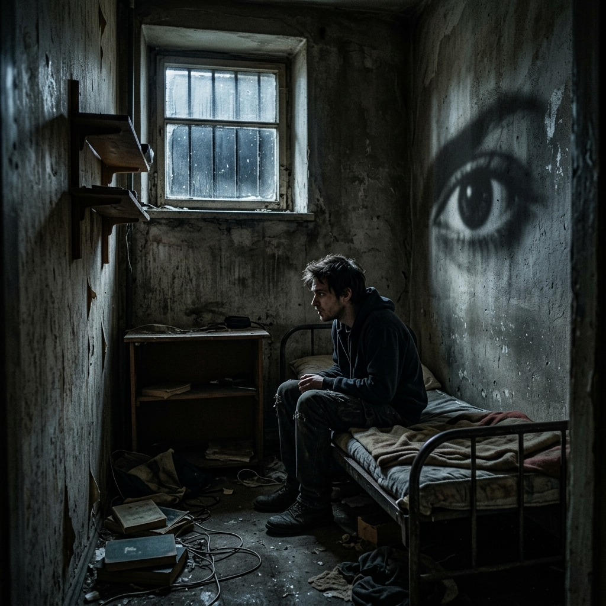

As I read, I felt...
As I read, I felt a deep sense of claustrophobia and anxiety. Through Atwood's use of direct interior monologue (the reader experiences the exact same experience as Offred), due to Offred being confined in a small space where she cannot see what is happening in the outside world without being watched or able to express herself with her true feelings, the reader has a similar confinement experience. In addition to this confinement, the constant fear of uncertainty about whether someone else may be watching you (an eye) if they are a faithful follower of Gilead or a member of the rebellion also kept me in a heightened state of anxiety. While reading this book created an emotional burden on me, I truly appreciated the freedom that allows me to read a book or go out and walk freely.
